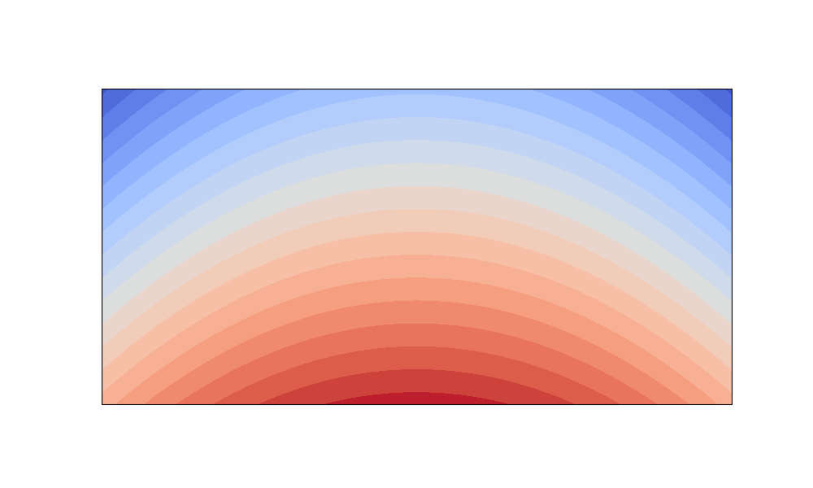

备注
Go to the end to download the full example code.
西北地区气温场地图#
本示例演示如何用 Cartopy 绘制中国西北地区的气温空间分布填色图：先构造一
个覆盖东经 90°~112°、北纬 32°~43° 的合成气温场，再用 PlateCarree 等经纬
度投影加上 contourf 填色，随后叠加海岸线、国界、河流等地理要素，裁剪出
西北区域，并标注兰州观测站点。
完整走一遍 Cartopy 的标准流程：
指定画布投影（GeoAxes）——决定“纸往哪张地图坐标架上铺”；
contourf绘制气温填色场，必须绑定transform；叠加地理要素（海岸线、国界、河流），图层顺序由底到顶；
set_extent裁剪西北区域；添加
colorbar、标题，并标注兰州站点散点。
备注
实际项目中通常用 xarray.open_dataset 读取 NetCDF 再分析场（如本项目的
./data/northwest_temp.nc）。这里为了保证示例可复现、无需外部文件即可
运行，改用 numpy 构造一份字段结构一致的合成气温场。
1. 导入库并配置中文字体#
ccrs 负责投影，cfeature 负责地理矢量要素；再统一指定无衬线中文字体。
import matplotlib
matplotlib.rcParams["font.sans-serif"] = [
"SimHei", "Microsoft YaHei", "WenQuanYi Zen Hei",
"Noto Sans CJK SC", "Arial Unicode MS",
]
matplotlib.rcParams["axes.unicode_minus"] = False # 正确显示负号
import numpy as np
import matplotlib.pyplot as plt
import cartopy.crs as ccrs
import cartopy.feature as cfeature
2. 构造西北地区合成气温场#
网格范围：东经 90°~112°，北纬 32°~43°（西北地区标准经纬度）。 温度用一个解析函数描述：纬度越高越冷（南暖北冷），并叠加少许经向起伏， 以模拟西北地形带来的温度空间结构。
lon = np.linspace(90, 112, 45) # 经度轴（°E）
lat = np.linspace(32, 43, 33) # 纬度轴（°N）
LON, LAT = np.meshgrid(lon, lat) # 二维网格，与温度场同形状
# 合成气温（℃）：15 + 0.5*(40-lat) 体现纬度递减，减去经向平方项体现地形起伏
temp = 15 + 0.5 * (40 - LAT) - 0.02 * (LON - 101) ** 2
3. 创建画布，绘制气温填色场#
subplot_kw 的 projection 把普通坐标轴换成地理 GeoAxes；
transform 告诉 Cartopy 这份数据贴在地球的哪个经纬度上。
fig, ax = plt.subplots(figsize=(10, 6),
subplot_kw={"projection": ccrs.PlateCarree()})
contour = ax.contourf(LON, LAT, temp,
levels=20,
cmap="coolwarm",
transform=ccrs.PlateCarree())

4. 叠加地理要素#
图层由底到顶：填色场 → 河流 → 海岸线 → 国界。线条按科研审美统一粗细配色。
ax.coastlines(linewidth=0.8, color="black")
ax.add_feature(cfeature.BORDERS, linewidth=0.8, color="black")
ax.add_feature(cfeature.RIVERS, linewidth=0.4, color="#4488dd")
ax.add_feature(cfeature.OCEAN, facecolor="#d6e4f0") # 海洋淡蓝底色
D:\Code\miniforge3\envs\P312\Lib\site-packages\cartopy\mpl\feature_artist.py:143: UserWarning: facecolor will have no effect as it has been defined as "never".
warnings.warn('facecolor will have no effect as it has been '
<cartopy.mpl.feature_artist.FeatureArtist object at 0x0000020ECD91D310>
5. 裁剪西北区域#
顺序 [西经, 东经, 南纬, 北纬]，并显式指定 crs 才能正确裁剪。
ax.set_extent([90, 112, 32, 43], crs=ccrs.PlateCarree())
6. 色标、标题与兰州站点标记#
兰州站坐标：lon=103.83°E, lat=36.06°N；标点和文字都需携带 transform。
cbar = fig.colorbar(contour, shrink=0.8)
cbar.set_label("气温 ℃", fontsize=11)
ax.set_title("西北地区气温空间分布图", fontsize=14)
ax.scatter(103.83, 36.06, c="black", marker="o", s=30,
transform=ccrs.PlateCarree())
ax.text(104.2, 36.06, "兰州站", fontsize=9,
transform=ccrs.PlateCarree())
Text(104.2, 36.06, '兰州站')
7. 显示与保存#
画面中弹出地图；同时以 300 DPI 导出高清 PNG（带紧密白边裁剪）。
few_features = ax.gridlines(draw_labels=True, linestyle="--", alpha=0.6)
few_features.top_labels = False
few_features.right_labels = False
plt.show()
# plt.savefig("./figures/northwest_temp_map.png", dpi=300, bbox_inches="tight")
Total running time of the script: (0 minutes 0.212 seconds)